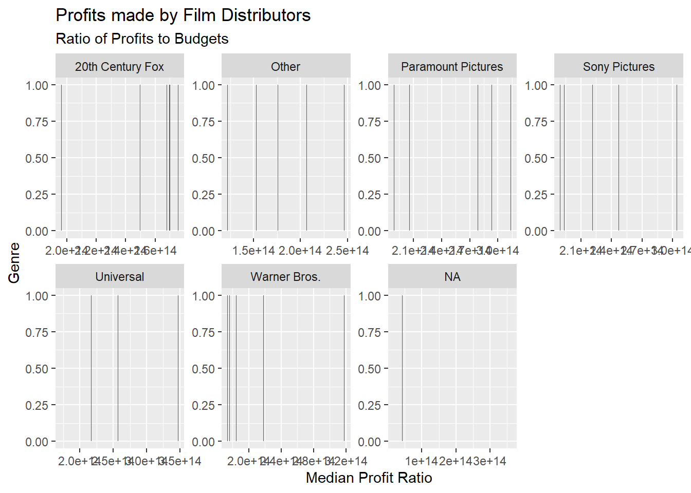
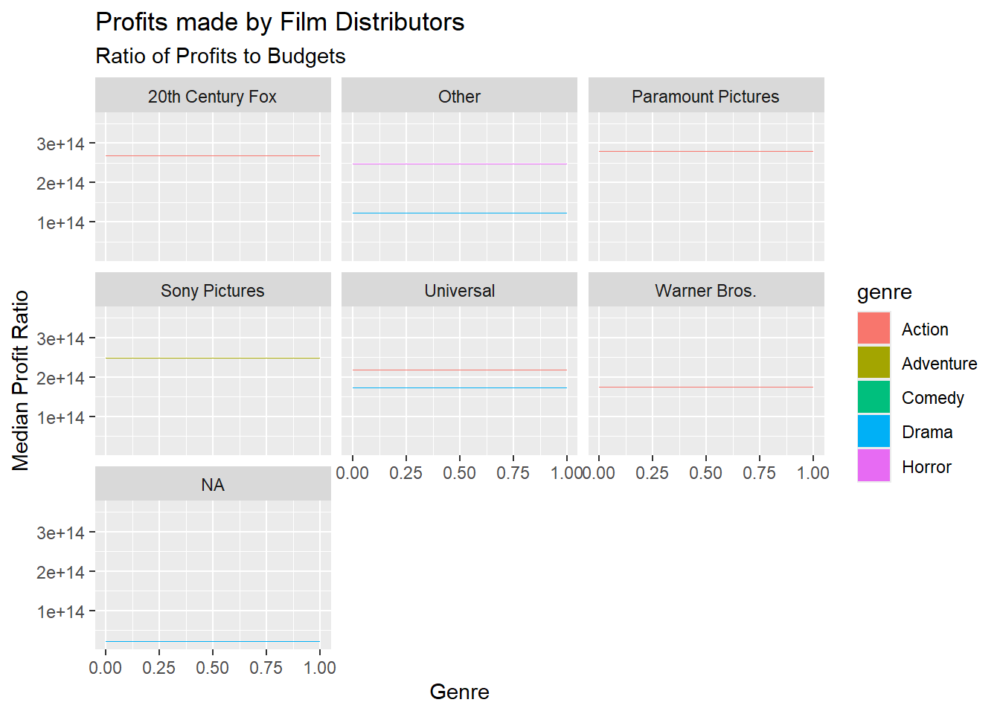
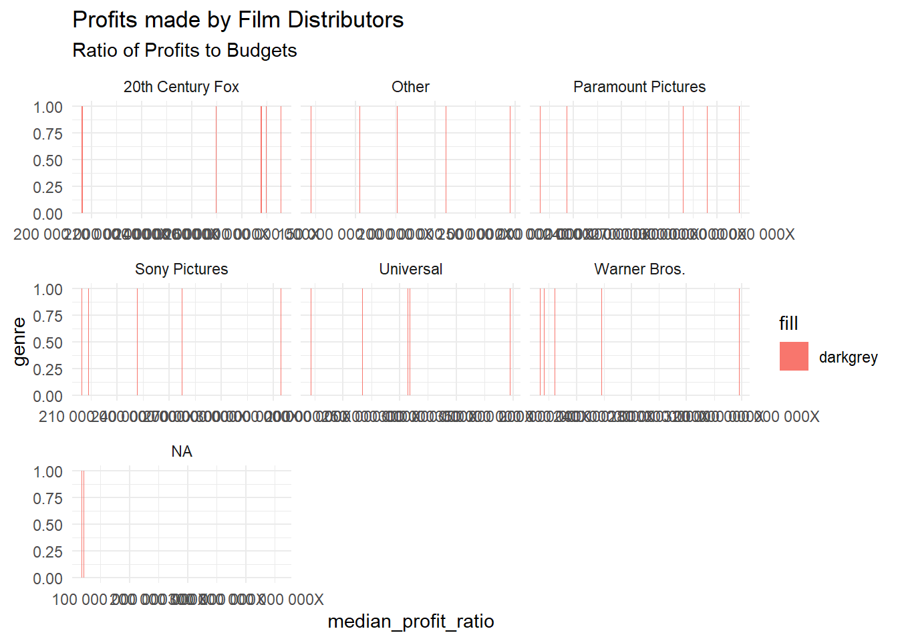
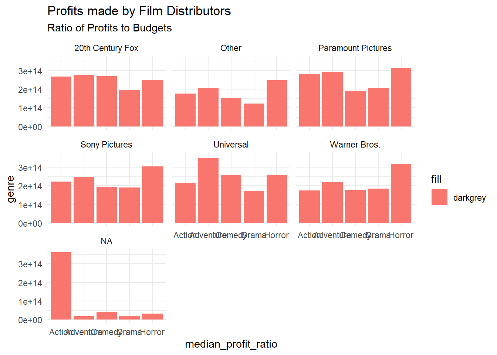
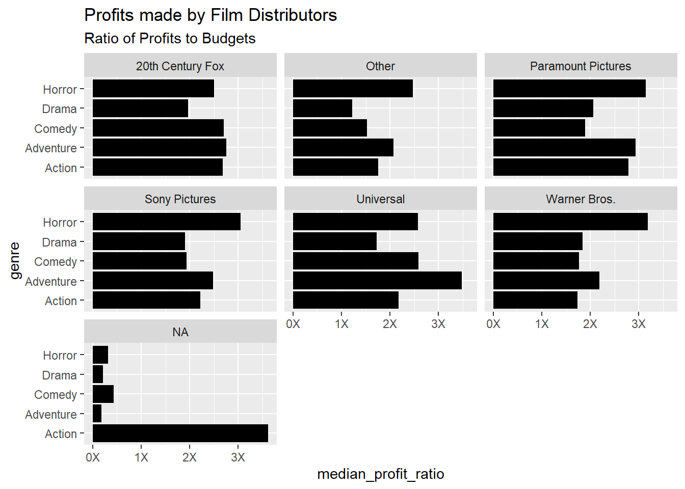

── Attaching core tidyverse packages ──────────────────────── tidyverse 2.0.0 ──
✔ dplyr 1.1.4 ✔ readr 2.1.5
✔ forcats 1.0.0 ✔ stringr 1.5.1
✔ ggplot2 3.5.1 ✔ tibble 3.2.1
✔ lubridate 1.9.3 ✔ tidyr 1.3.1
✔ purrr 1.0.2
── Conflicts ────────────────────────────────────────── tidyverse_conflicts() ──
✖ dplyr::filter() masks stats::filter()
✖ dplyr::lag() masks stats::lag()
ℹ Use the conflicted package (<http://conflicted.r-lib.org/>) to force all conflicts to become errors
library(mosaic)
Registered S3 method overwritten by 'mosaic':
method from
fortify.SpatialPolygonsDataFrame ggplot2
The 'mosaic' package masks several functions from core packages in order to add
additional features. The original behavior of these functions should not be affected by this.
Attaching package: 'mosaic'
The following object is masked from 'package:Matrix':
mean
The following objects are masked from 'package:dplyr':
count, do, tally
The following object is masked from 'package:purrr':
cross
The following object is masked from 'package:ggplot2':
stat
The following objects are masked from 'package:stats':
binom.test, cor, cor.test, cov, fivenum, IQR, median, prop.test,
quantile, sd, t.test, var
The following objects are masked from 'package:base':
max, mean, min, prod, range, sample, sum
library(skimr)
Attaching package: 'skimr'
The following object is masked from 'package:mosaic':
n_missing
library(ggformula)
Dataset - Movie Profits
This is a dataset pertaining to movies and genres.
Warning: One or more parsing issues, call `problems()` on your data frame for details,
e.g.:
dat <- vroom(...)
problems(dat)
Rows: 3310 Columns: 1
── Column specification ────────────────────────────────────────────────────────
Delimiter: ","
chr (1): release_date;movie;production_budget;domestic_gross;worldwide_gross...
ℹ Use `spec()` to retrieve the full column specification for this data.
ℹ Specify the column types or set `show_col_types = FALSE` to quiet this message.
movie_profit
# A tibble: 3,310 × 1
release_date;movie;production_budget;domestic_gross;worldwide_gross;distrib…¹
<chr>
1 2005-07-22;November;250000;191862;191862;Other;R;Drama;7,67448000000000e-01;…
2 1998-08-28;I Married a Strange Person;250000;203134;203134;Other;NA;Comedy;8…
3 1997-03-28;Love and Other Catastrophes;250000;212285;743216;Other;R;Comedy;2…
4 2000-07-14;Chuck&Buck;250000;1055671;1157672;Other;R;Drama;4,63068800000000e…
5 2011-10-28;Like Crazy;250000;3395391;3728400;Paramount Pictures;PG-13;Drama;…
6 2003-04-11;Better Luck Tomorrow;250000;3802390;3809226;Paramount Pictures;R;…
7 2017-04-28;Sleight;250000;3930990;3934450;Other;R;Action;1,57378000000000e+0…
8 2002-06-28;Lovely and Amazing;250000;4210379;4613482;Other;R;Drama;1,8453928…
9 2012-08-17;Compliance;270000;319285;830700;Other;R;Drama;3,07666666666667e+0…
10 2005-05-06;Fighting Tommy Riley;300000;10514;10514;Other;R;Drama;3,504666666…
# ℹ 3,300 more rows
# ℹ abbreviated name:
# ¹`release_date;movie;production_budget;domestic_gross;worldwide_gross;distributor;mpaa_rating;genre;profit_ratio;decade`
Rows: 3310 Columns: 10
── Column specification ────────────────────────────────────────────────────────
Delimiter: ";"
chr (4): movie, distributor, mpaa_rating, genre
dbl (4): production_budget, domestic_gross, worldwide_gross, decade
num (1): profit_ratio
date (1): release_date
ℹ Use `spec()` to retrieve the full column specification for this data.
ℹ Specify the column types or set `show_col_types = FALSE` to quiet this message.
movie_profit
# A tibble: 3,310 × 10
release_date movie production_budget domestic_gross worldwide_gross
<date> <chr> <dbl> <dbl> <dbl>
1 2005-07-22 November 250000 191862 191862
2 1998-08-28 I Married a St… 250000 203134 203134
3 1997-03-28 Love and Other… 250000 212285 743216
4 2000-07-14 Chuck&Buck 250000 1055671 1157672
5 2011-10-28 Like Crazy 250000 3395391 3728400
6 2003-04-11 Better Luck To… 250000 3802390 3809226
7 2017-04-28 Sleight 250000 3930990 3934450
8 2002-06-28 Lovely and Ama… 250000 4210379 4613482
9 2012-08-17 Compliance 270000 319285 830700
10 2005-05-06 Fighting Tommy… 300000 10514 10514
# ℹ 3,300 more rows
# ℹ 5 more variables: distributor <chr>, mpaa_rating <chr>, genre <chr>,
# profit_ratio <dbl>, decade <dbl>
The movie_profit dataset consists of 3,310 rows and 10 columns, offering detailed insights into various films’ financial and categorical information. It includes data such as the release date of each movie, its title, production budget, and earnings from both domestic and worldwide markets. The dataset also captures additional attributes like the movie’s distributor, MPAA rating (e.g., R, PG-13), genre (e.g., Drama, Comedy, Action), profit ratio, and the decade of release.
First 10 rows of the Movie Profits dataset
movie_profit %>%head(10)
# A tibble: 10 × 10
release_date movie production_budget domestic_gross worldwide_gross
<date> <chr> <dbl> <dbl> <dbl>
1 2005-07-22 November 250000 191862 191862
2 1998-08-28 I Married a St… 250000 203134 203134
3 1997-03-28 Love and Other… 250000 212285 743216
4 2000-07-14 Chuck&Buck 250000 1055671 1157672
5 2011-10-28 Like Crazy 250000 3395391 3728400
6 2003-04-11 Better Luck To… 250000 3802390 3809226
7 2017-04-28 Sleight 250000 3930990 3934450
8 2002-06-28 Lovely and Ama… 250000 4210379 4613482
9 2012-08-17 Compliance 270000 319285 830700
10 2005-05-06 Fighting Tommy… 300000 10514 10514
# ℹ 5 more variables: distributor <chr>, mpaa_rating <chr>, genre <chr>,
# profit_ratio <dbl>, decade <dbl>
The first ten rows of the Movie Profits dataset provide a snapshot of films spanning from 1997 to 2017. Each row contains details such as the release date, movie title, and production budget, with budgets ranging from $250,000 to $300,000 for these films. The domestic gross and worldwide gross values vary significantly, reflecting the financial performance of each movie. For instance, “Chuck&Buck” has a worldwide gross of over $1 million, while “Fighting Tommy Riley” has a modest gross of just over $10,000.The decade column categorizes each film based on its release period, with most films in this sample from the 2000s.
The glimpse provides an overview of financial, categorical, and chronological data for each movie in the dataset.
Inspect - movie_profit
inspect(movie_profit)
categorical variables:
name class levels n missing
1 movie character 3310 3310 0
2 distributor character 6 3268 42
3 mpaa_rating character 4 3180 130
4 genre character 5 3310 0
distribution
1 10 Days in a Madhouse (0%) ...
2 Other (53.2%), Warner Bros. (11%) ...
3 R (46.4%), PG-13 (33.5%), PG (17.4%) ...
4 Drama (36.5%), Comedy (24.1%) ...
Date variables:
name class first last min_diff max_diff n missing
1 release_date Date 1936-02-05 2017-12-22 0 days 2592 days 3310 0
quantitative variables:
name class min Q1 median Q3
1 production_budget numeric 2.50e+05 9.500000e+06 2.000000e+07 4.500000e+07
2 domestic_gross numeric 0.00e+00 6.530094e+06 2.558731e+07 6.046695e+07
3 worldwide_gross numeric 4.23e+02 1.086144e+07 4.040903e+07 1.184703e+08
4 profit_ratio numeric 1.38e+10 7.861269e+13 1.962499e+14 3.942158e+14
5 decade numeric 1.93e+03 1.990000e+03 2.000000e+03 2.010000e+03
max mean sd n missing
1 1.750000e+08 3.326794e+07 3.460741e+07 3310 0
2 4.745447e+08 4.551509e+07 5.852794e+07 3310 0
3 1.162782e+09 9.384123e+07 1.389514e+08 3310 0
4 4.315179e+16 4.319388e+14 1.501736e+15 3310 0
5 2.010000e+03 1.998785e+03 1.061308e+01 3310 0
The movie_profit dataset contains both categorical and quantitative variables. Categorical variables include the movie name, distributor (with 6 levels), mpaa_rating (with 4 levels), and genre (with 5 levels). The release dates span from February 5, 1936, to December 22, 2017, with the time difference between movies varying from 0 to 2,592 days. Quantitative variables include production_budget, domestic_gross, worldwide_gross, profit_ratio, and decade. The production budget ranges from 250,000 to significantly higher values, while domestic gross, worldwide gross, and profit ratio also exhibit wide variation across movies.
Skim - movie_profit
skim(movie_profit)
Data summary
Name
movie_profit
Number of rows
3310
Number of columns
10
_______________________
Column type frequency:
character
4
Date
1
numeric
5
________________________
Group variables
None
Variable type: character
skim_variable
n_missing
complete_rate
min
max
empty
n_unique
whitespace
movie
0
1.00
1
35
0
3310
0
distributor
42
0.99
5
18
0
6
0
mpaa_rating
130
0.96
1
5
0
4
0
genre
0
1.00
5
9
0
5
0
Variable type: Date
skim_variable
n_missing
complete_rate
min
max
median
n_unique
release_date
0
1
1936-02-05
2017-12-22
2005-06-30
1723
Variable type: numeric
skim_variable
n_missing
complete_rate
mean
sd
p0
p25
p50
p75
p100
hist
production_budget
0
1
3.326794e+07
3.460741e+07
2.50e+05
9.500000e+06
2.000000e+07
4.500000e+07
1.750000e+08
▇▂▁▁▁
domestic_gross
0
1
4.551509e+07
5.852794e+07
0.00e+00
6.530094e+06
2.558731e+07
6.046695e+07
4.745447e+08
▇▁▁▁▁
worldwide_gross
0
1
9.384123e+07
1.389514e+08
4.23e+02
1.086144e+07
4.040903e+07
1.184703e+08
1.162782e+09
▇▁▁▁▁
profit_ratio
0
1
4.319388e+14
1.501736e+15
1.38e+10
7.861269e+13
1.962499e+14
3.942158e+14
4.315179e+16
▇▁▁▁▁
decade
0
1
1.998790e+03
1.061000e+01
1.93e+03
1.990000e+03
2.000000e+03
2.010000e+03
2.010000e+03
▁▁▁▃▇
The production_budget has a minimum value of $250,000, a maximum of over $336 million, with a mean of about $33.27 million, a median of $20 million, and a standard deviation of $34.6 million, indicating high variability in film budgets. The domestic_gross shows a minimum of $0, a maximum of around $451.5 million, with a mean of $45.5 million, and a standard deviation of $58.53 million, suggesting that while some movies earned significantly, others did poorly. Similarly, worldwide_gross ranges from $423 to nearly $1.39 billion, with an average of $93.84 million and a high standard deviation of $138.95 million, highlighting the broad spread in international earnings. The profit_ratio has a huge range from 1.38e+10 to 4.31e+14, reflecting the varying degrees of profitability, with a mean around 4.32e+14. The decade variable covers the time span from the early 1900s, with a mean year of approximately 1998, and a standard deviation of 10.6, showing that most of the data comes from modern movies.
Data Dictionary
Quantitative Data:
production_budget (dbl): The amount of money spent on producing the movie.
domestic_gross (dbl): The total revenue generated by the movie in the domestic (U.S.) market.
worldwide_gross (dbl): The total revenue generated by the movie worldwide.
profit_ratio (dbl): The ratio of the movie’s profit relative to its budget.
decade (dbl): The decade during which the movie was released, represented numerically.
Qualitative Data:
release_date (date): The date when the movie was released.
movie (chr): The title of the movie.
distributor (chr): The name of the studio or company that distributed the movie.
mpaa_rating (chr): The Motion Picture Association of America (MPAA) rating of the movie.
genre (chr): The genre or category of the movie.
Target Variable
Profit Ratio
The profit ratio is a key outcome of interest because it measures the success or profitability of each movie relative to its production budget. This is the most logical target variable because it represents the business performance of the movies in financial terms. The goal of analysis could be to understand what factors influence the profitability of movies.
Predictor Variables
Production Budget
The amount of money spent to produce a movie likely affects its profit ratio. Larger budgets may lead to higher production values, star power, or marketing, but may also increase the risk of lower profitability if the movie doesn’t perform well.
Domestic Gross
The domestic box office earnings provide a direct measure of the movie’s success within its home country, which likely impacts the overall profitability.
Worldwide Gross
Like domestic gross, this variable represents the movie’s global earnings, which play a crucial role in determining profitability, especially for internationally successful films.
Distributor
Different distributors may have different levels of market reach, marketing budgets, and strategic capabilities, which could influence a movie’s success and profit ratio.
MPAA Rating
The MPAA rating (e.g., PG, PG-13, R) affects the audience size and demographics. Certain ratings may limit a movie’s audience, which could affect its overall profitability.
Genre
Different genres attract different audience demographics, which could influence box office performance and profitability. Some genres might consistently perform better than others.
Release Date
The timing of a movie’s release (e.g., summer blockbuster season, holiday period) can significantly influence its box office performance, which may impact profitability.
Decade
The decade provides a historical context. Movies released in different decades may face different market conditions (e.g., competition, audience preferences, economic conditions), influencing profitability.
Research Experiment to Investigate Movie Profitability
The objective of this research experiment could have been to explore the factors that potentially influence the profitability of movies. The study might have aimed to analyze how various variables related to movie production, such as budget, genre, distributor, and MPAA rating, as well as market performance indicators like domestic and worldwide gross earnings, could affect a movie’s profit ratio.
Several hypotheses could have been proposed:
Movies with higher production budgets might correlate with lower profit ratios, possibly due to the increased financial risk associated with larger budgets.
Certain genres, such as action or adventure, could exhibit higher profit ratios compared to others like drama or comedy.
Films distributed by larger studios, such as Warner Bros. or Paramount Pictures, might show better financial performance than those handled by smaller distributors.
MPAA ratings could also play a role in profitability, with R-rated films potentially drawing smaller audiences compared to PG or PG-13 rated films.
The dataset used for this study consists of 3,310 movies from 1936 to 2017. The sample includes data on production budgets, domestic and worldwide gross, distributors, MPAA ratings, genres, profit ratios, and the decade in which the movie was released.
The data could have been obtained from box office databases (e.g., Box Office Mojo, IMDb), industry reports, and public financial records of movie studios. Additional information such as MPAA ratings and genres could be sourced from the Motion Picture Association of America (MPAA) and film databases.
Limitations:
Missing Data: Some movies may have incomplete data (e.g., missing MPAA ratings or gross earnings), which could affect the robustness of conclusions.
External Factors: The dataset may not account for external factors like economic downturns, marketing spend, or competition from other media during the release window, all of which could impact profitability.
Historical Bias: Older movies may have different box office reporting practices, and inflation was likely accounted for in calculating the profit ratios to ensure comparability across time.
Insights gained from this study could inform studios on what variables drive financial success and help in decision-making for future film projects.
Calculating median profit ratio
# Aggregating data by distributor and genre to calculate median profit ratiomovie_profit_summary <- movie_profit %>%group_by(distributor, genre) %>%summarize(median_profit_ratio =median(profit_ratio, na.rm =TRUE) , count =n())
`summarise()` has grouped output by 'distributor'. You can override using the
`.groups` argument.
movie_profit_summary
# A tibble: 35 × 4
# Groups: distributor [7]
distributor genre median_profit_ratio count
<chr> <chr> <dbl> <int>
1 20th Century Fox Action 2.68e14 67
2 20th Century Fox Adventure 2.76e14 75
3 20th Century Fox Comedy 2.70e14 69
4 20th Century Fox Drama 1.96e14 55
5 20th Century Fox Horror 2.50e14 13
6 Other Action 1.76e14 227
7 Other Adventure 2.07e14 191
8 Other Comedy 1.53e14 375
9 Other Drama 1.22e14 784
10 Other Horror 2.47e14 160
# ℹ 25 more rows
Plotting the graph - Attempt 1
movie_profit_summary %>%gf_bar(~median_profit_ratio) %>%gf_facet_wrap(~ distributor, scales ="free", ncol =4) %>%gf_labs(title ="Profits made by Film Distributors",subtitle ="Ratio of Profits to Budgets",x ="Median Profit Ratio",y ="Genre" )

Attempt 2
movie_profit_summary %>%gf_bar(~median_profit_ratio | distributor, fill =~genre) %>%gf_refine(coord_flip()) %>%gf_labs(title ="Profits made by Film Distributors",subtitle ="Ratio of Profits to Budgets",x ="Median Profit Ratio",y ="Genre" )

Attempt 3
movie_profit_summary %>%gf_bar(~median_profit_ratio | genre, fill =~"darkgrey") %>%gf_facet_wrap(~distributor, scales ="free_x", ncol =3) %>%gf_labs(title ="Profits made by Film Distributors",subtitle ="Ratio of Profits to Budgets",x ="median_profit_ratio",y ="genre" ) %>%gf_refine(theme_minimal()) %>%gf_refine(scale_x_continuous(labels = scales::label_number(scale =1, suffix ="X")))

In my first three attempts, I tried using gf_bar and spent a lot of time trying to figure out where I was going wrong. After revisiting some resources, I realized that gf_col (or geom_col) was the appropriate function to use, as it requires both X and Y variables to plot columns accurately. This was the key issue since gf_bar wasn’t designed for this type of plotting. In my third attempt, I read further to understand how to change the label names on the X-axis. However, I encountered challenges with formatting the numbers correctly.
Attempt 4
movie_profit_summary %>%gf_col(median_profit_ratio ~ genre | distributor, scales ="free_x", fill =~"darkgrey", ncol =3) %>%gf_labs(title ="Profits made by Film Distributors",subtitle ="Ratio of Profits to Budgets",x ="median_profit_ratio",y ="genre" ) %>%gf_refine(theme_minimal())

Final Attempt
movie_profit_summary %>%gf_col(genre ~ median_profit_ratio | distributor, scales ="free_x", fill ="black", ncol =3) %>%gf_labs(title ="Profits made by Film Distributors",subtitle ="Ratio of Profits to Budgets",x ="median_profit_ratio",y ="genre" ) %>%gf_refine(scale_x_continuous(labels = scales::label_number(scale =1e-14, accuracy =1, suffix ="X")))

I finally figured it out! I realized that the issue was with the scale for the labeling on the X-axis. The scale needed to be adjusted from 1 to 1e-14 in order to display the numbers correctly. This adjustment made a big difference in cleaning up the axis labels and presenting the data in a more readable format.
Questions
The graph titled “Profits made by Film Distributors” seeks to answer the following questions:
1.How does the profit-to-budget ratio vary across different film genres (Horror, Drama, Comedy, Adventure, Action) for major film distributors?
( The graph compares the profitability of different genres for distributors like 20th Century Fox, Paramount Pictures, Sony Pictures, Universal, Warner Bros., and others. This helps to identify which genres are more profitable for specific distributors.)
20th Century Fox has the highest median profit ratio in the Adventure genre with a value of 2.76e+14, followed closely by Action (2.68e+14) and Comedy (2.69e+14).
Paramount Pictures also sees high profits from Adventure films with a median ratio of 2.93e+14, followed by Action (2.78e+14) and Comedy (1.89e+14).
Sony Pictures has the highest median profit ratio for Adventure films (2.47e+14) and Action films (2.22e+14).
Universal stands out in the Adventure genre with a median profit ratio of 3.47e+14, showing Adventure films are quite profitable for them.
Warner Bros. performs best in Horror with a median profit ratio of 3.18e+14, followed by Comedy (1.76e+14).
Across the board, Adventure and Action films tend to show higher median profit ratios for most major distributors. Horror also stands out for Warner Bros.
2.Which film distributor yields the highest median profit-to-budget ratio for each genre?
( By displaying the profit ratios for each genre across multiple distributors, the graph helps to determine which distributor is most successful in turning a profit for specific types of films.)
For Action, Paramount Pictures leads with a median profit ratio of 2.78e+14.
In the Adventure genre, Universal has the highest profit ratio with 3.47e+14.
Warner Bros. has the highest profit ratio in the Horror genre, at 3.18e+14.
For Comedy, Universal stands out with 2.58e+14.
In Drama, Paramount Pictures takes the lead with 2.06e+14.
Thus, Universal dominates Adventure and Comedy, Paramount Pictures excels in Action and Drama, and Warner Bros. shines in Horror.
3.How do smaller or unspecified distributors compare to larger, well-known distributors in terms of profitability?
( The “Other” and “NA” categories allow for a comparison between larger studios and smaller or unclassified distributors, providing insight into whether smaller entities can achieve comparable profitability.)
Smaller distributors grouped under “Other” tend to have median profit ratios that are competitive with the larger studios. For instance, the median profit ratio for Action films under “Other” is 1.76e+14, which is relatively close to that of major distributors.
The Horror genre under “Other” also does well with a profit ratio of 2.46e+14, almost on par with Warner Bros.’ high profitability in the same genre (3.18e+14).
This shows that smaller or unclassified distributors, while not always outperforming the majors, can still achieve significant profitability, particularly in certain genres like Horror or Action.
Additional Questions
1.Identify the type of plot: The graph is a facet bar plot showing the ratio of profits to budgets for different film genres across various distributors.
2.What are the variables used to plot this graph?
The x-axis represents the median profit ratio (Ratio of profits to budgets).
The y-axis represents the genres of films (Horror, Drama, Comedy, Adventure, Action).
The different facets represent the various distributors (e.g., 20th Century Fox, Paramount Pictures, Sony Pictures, etc.).
3.If you were to invest in movie production ventures, which are the two best genres that you might decide to invest in?
Adventure and Action films appear to be the best genres to invest in, as they show the highest median profit ratios across multiple distributors.
4.Which R command might have been used to obtain the separate plots for each distributor? The gf_facet_wrap command (from the ggformula package) might have been used to create separate plots for each distributor. However, I used the gf_col command.
5.If the original dataset had BUDGETS and PROFITS in separate columns, what preprocessing might have been done to achieve this plot?
The data could be grouped by distributor and genre to calculate the median profit ratio:
This would aggregate the data and prepare it for plotting as shown in the graph.
Inference and Story from the Graph and Data
The graph titled “Profits made by Film Distributors” presents a fascinating breakdown of how the median profit ratios for different film genres compare across major film distributors. By plotting this data, we gain valuable insights into the profitability trends of each distributor and their success in various genres.
Key Observations
From the data and the graph, I observed that:
Adventure and Action Dominate: Across most distributors, the Adventure and Action genres consistently exhibit the highest median profit ratios. For instance, in the case of Universal and Warner Bros., the Adventure genre outperforms other genres in terms of profitability, with Action following closely behind. These two genres clearly provide the highest return on investment for these distributors.
Comedy’s Strong Performance: Comedy also shows strong performance across distributors like Paramount Pictures and Warner Bros., highlighting that it’s another genre that often yields significant profits relative to its budget.
Horror’s Variable Performance: While Horror films generally show high profit margins (especially with Warner Bros. and 20th Century Fox), the number of films (represented by the count data) in this genre tends to be lower compared to other genres. This could suggest that while fewer horror films are produced, they tend to be highly profitable.
Where Would You Invest?
If I were to invest in movie production ventures based on this data, the two best genres to invest in would likely be Adventure and Action. These genres consistently demonstrate the highest profit-to-budget ratios across multiple distributors, making them safe bets for maximizing returns on investment. Adventure films, in particular, seem to have a broad appeal and high profitability, as seen with Universal and Warner Bros., where the Adventure genre outperforms other categories significantly.
If I were to invest in movie production ventures based on this data, the two best genres to invest in would likely be Adventure and Action. These genres consistently demonstrate the highest profit-to-budget ratios across multiple distributors, making them safe bets for maximizing returns on investment. Adventure films, in particular, seem to have a broad appeal and high profitability, as seen with Universal and Warner Bros., where the Adventure genre outperforms other categories significantly.
The Role of Distributors
Each distributor seems to have strengths in different genres. For example:
Paramount Pictures shows strong performance across all genres, with no one genre clearly dominating, indicating a well-balanced strategy across its film portfolio.
20th Century Fox and Sony Pictures both show relatively high profit margins across Action and Adventure, making these genres crucial for their financial success.
The “Other” category suggests that smaller or independent distributors can still achieve solid profitability, particularly in genres like Action and Comedy.
The Power of Data Visualization
This graph not only tells a story about the profitability of genres but also underscores the importance of visualizing data to make informed business decisions. If you are a studio executive or a potential investor, this kind of analysis helps you pinpoint the genres that offer the best return on investment, the distributors that succeed in specific markets, and areas where opportunities might exist.